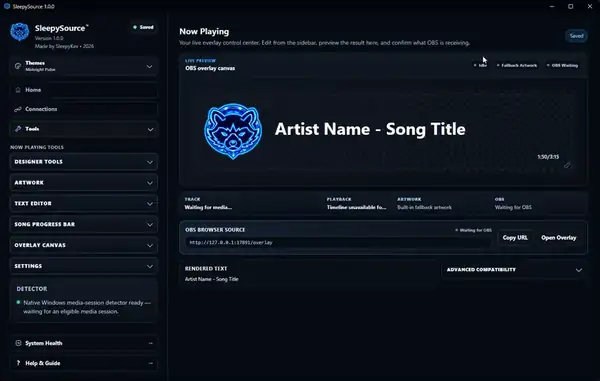
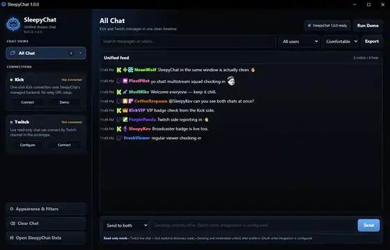

SLEEPYSOURCE
SLEEPYSOURCEStreaming Toolkit
A Windows creator toolkit for building and running stream overlays, alerts, chat displays, now-playing elements, countdowns, dashboards, and other stream utilities from one place.
LEARN MORE →
SleepySource and SleepyChat are focused creator tools built to make streaming and live chat simpler, cleaner, and easier to manage.
SLEEPYSOURCEA Windows creator toolkit for building and running stream overlays, alerts, chat displays, now-playing elements, countdowns, dashboards, and other stream utilities from one place.
LEARN MORE →
SLEEPYCHATA focused chat companion designed to keep Twitch and Kick conversations together in a clean interface, so creators can stay connected without juggling unnecessary clutter.
LEARN MORE →
SleepySource™ and SleepyChat™ are free to download and use.
Desktop tools designed around a Windows streaming setup.
SleepySource™ provides browser-source overlays and creator tools for OBS.
SleepyChat™ brings both communities into one focused chat experience.
Designed around real streaming workflows instead of unnecessary clutter.
SleepyHub™ is built so current and future creator tools can live together.